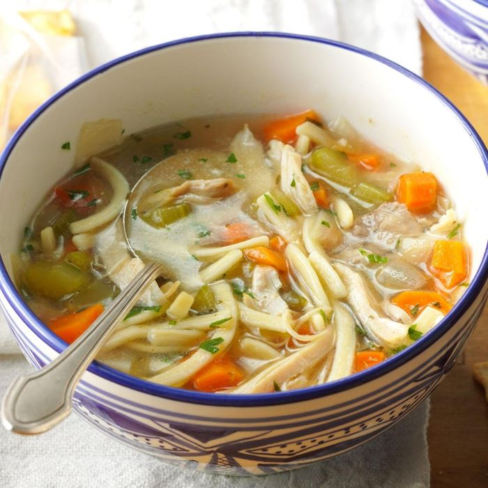

Ingredients
- 2-1/2 pounds bone-in chicken thighs
- 1/2 teaspoon salt
- 1/2 teaspoon pepper
- 1 tablespoon canola oil
- 1 large onion, chopped
- 1 garlic clove, minced
- 10 cups chicken broth
- 4 celery ribs, chopped
- 4 medium carrots, chopped
- 2 bay leaves
- 1 teaspoon minced fresh thyme or 1/4 teaspoon dried thyme
- 3 cups uncooked kluski or other egg noodles (about 8 ounces)
- 1 tablespoon chopped fresh parsley
- 1 tablespoon lemon juice
- Optional: Additional salt and pepper
Directions
- Pat chicken dry with paper towels; sprinkle with salt and pepper. In a 6-qt. stockpot, heat oil over medium-high heat. Add chicken in batches, skin side down; cook until dark golden brown, 3-4 minutes. Remove chicken from pan; remove and discard skin. Discard all but 2 tablespoons drippings.
- Add onion to drippings; cook and stir over medium-high heat until tender, 4-5 minutes. Add garlic; cook 1 minute longer. Add broth, stirring to loosen browned bits from pan. Bring to a boil. Return chicken to pan. Add celery, carrots, bay leaves and thyme. Reduce heat; simmer, covered, until chicken is tender, 25-30 minutes.
- Transfer chicken to a plate. Remove soup from heat. Add noodles; let stand, covered, until noodles are tender, 20-22 minutes.
- Meanwhile, when chicken is cool enough to handle, remove meat from bones; discard bones. Shred meat into bite-sized pieces. Return meat to stockpot. Stir in parsley and lemon juice. If desired, adjust seasoning with additional salt and pepper. Discard bay leaves.